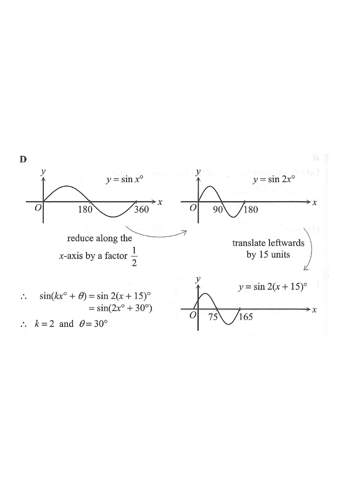

Drag your eye down the solution — the diagram highlights each step.

The curve is a sine wave. From the figure, the wave has been drawn so that it crosses the $x$-axis at $75$ and again at $165$, and the curve finishes one full period at $x=165$ (returning to the $x$-axis with the same downward-to-upward structure after the trough).
So the period is the horizontal distance between two consecutive $x$-intercepts of the same kind: one period starts at $x=75$ and ends at $x=165$.
$$\text{Period}=\frac{360^\circ}{k}=165-75=90^\circ$$
From $\dfrac{360^\circ}{k}=90^\circ$:
$$360 = 90k \quad\Rightarrow\quad k=\frac{360}{90}=4\ ?$$
Looking closely at the figure: the curve starts at the origin with a positive slope, reaches a maximum, then crosses the axis at $75$ going down, hits a minimum, and comes back to the axis at $165$.
Between the $x$-intercept at $75$ and the $x$-intercept at $165$ the curve goes down then up — that is a half period, not a full period.
$$\text{Half period}=165-75=90^\circ \;\Rightarrow\; \text{Period}=180^\circ$$
$$\frac{360^\circ}{k}=180^\circ \quad\Rightarrow\quad \boxed{k=2}$$
With $k=2$, the curve is $y=\sin(2x^\circ+\theta)$. An $x$-intercept at $x=75$ means $\sin(2\cdot75^\circ+\theta)=0$, i.e.
$$150^\circ+\theta = n\cdot 180^\circ \quad (n\in\mathbb{Z})$$
$$\theta = n\cdot180^\circ-150^\circ$$
Testing the allowed range $-180^\circ<\theta<180^\circ$:
At $x=0$ the graph cuts the positive $y$-axis (a positive value), so
$$y(0)=\sin(0+\theta)=\sin\theta > 0$$
With $\theta=30^\circ$, $\sin 30^\circ=\tfrac12>0$ ✔ (with $\theta=-150^\circ$, $\sin(-150^\circ)=-\tfrac12<0$ ✘, which contradicts the figure).
Also at $x=75$: $\sin(150^\circ+30^\circ)=\sin180^\circ=0$ ✔ and the curve goes downward there ✔.
At $x=165$: $\sin(330^\circ+30^\circ)=\sin360^\circ=0$ ✔
Therefore
$$k=2,\qquad \theta=30^\circ$$
Check: $y=\sin(2x^\circ+30^\circ)$ has period $180^\circ$, cuts the $y$-axis at $\sin30^\circ=0.5$, and has $x$-intercepts at $x=75$ and $x=165$ — matching the given figure.